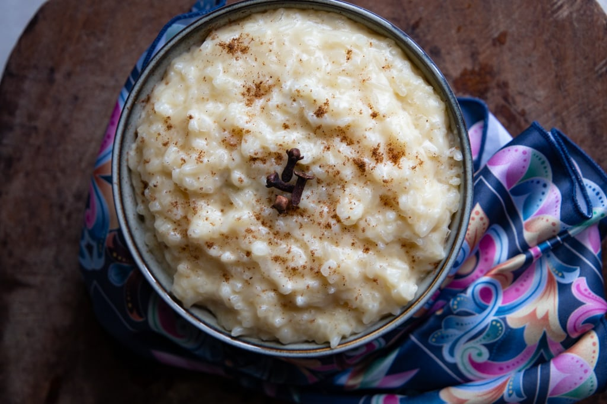

Arroz Con Leche

Costa Rican arroz con leche combines white rice, sweetened condensed milk, sugar, cinnamon and vanilla for the perfect sweet dessert served warm or cold!
Ingredients
- 3 cups white rice
- 3.5 cups water
- 2 tablespoons margarine or butter (optional)
- 2 cups hot water
- 1 cinnamon stick
- 1 tablespoon whole cloves
- 1 cup granulated white sugar
- 1/2 can of sweetened condensed milk
- 1 can of evaporated milk
- pinch of salt
- 1 teaspoon vanilla extract
- teaspoon lime zest
- 1/2 cup raisins (optional)
Steps
- In a large saucepan, combine the rice, margarine, 3.5 cups water, rice, cinnamon stick, and cloves.
- Boil over high heat until the water dries up, stirring occasionally to avoid the rice sticking to the bottom of the pan.
- Once the rice dries up add the hot water, sugar, and evaporated milk, stirring constantly.
- Add half the can of sweetened condensed milk, the lime zest, and pinch of salt.
- Boil and stir until the desired consistency is reached.
- Serve warm and sprinkled with ground cinnamon or nutmeg powder.
For Full Recipe Click Here
Return to recipes homepage